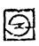

МИНИСТЕРСТВО ЭНЕРГЕТИКИ И ЭЛЕКТРИФИКАЦИИ СССР
ГЛАВНИИПРОЕКТ
ВСЕСОЮЗНЫЙ ОРДЕНА ТРУДОВОГО КРАСНОГО ЗНАМЕНИ
НАУЧНО-ИССЛЕДОВАТЕЛЬСКИЙ ИНСТИТУТ ГИДРОТЕХНИКИ
имени Б. Е. ВЕДЕНЕЕВА
УКАЗАНИЯ ПО ПРОЕКТИРОВАНИЮ ЦЕМЕНТАЦИИ В ГИДРОТЕХНИЧЕСКИХ ТУННЕЛЯХ
ВСН 03-74
Минэнерго СССР
Указания могут быть использованы при разработке проектов цементации и производства работ по ее осуществлению.

«ЭНЕРГИЯ»
Ленинградское отделение
1975
Настоящие Указания составлены в результате пересмотра «Технических условий и норм проектирования гидротехнических сооружений. Цементация в гидротехнических туннелях», ВСН-022-69/Минэнерго СССР по замечаниям отдела технического нормирования и стандартизации Госстроя СССР (№ 1-709 от. 7.03.1972 г.). Указания разработаны в лаборатории цементации ВНИИГ им. Б. Е. Веденеева заведующим группой Л. Ф. Фурсовым, проф. д. т. и. А. Н. Адамовичем и проф. д. т. н. В. С. Эристовым.
В настоящей работе отражен накопленный за последние годы опыт совершенствования расчетных и конструктивных решений, а также наиболее ценные результаты натурных наблюдений при строительстве и эксплуатации гидротехнических туннелей.
С вводом в действие данных «Указаний по проектированию цементации в гидротехнических туннелях» (ВСН 03-74), разработанных в лаборатории цементации ВНИИГ им. Б. Е. Веденеева, утрачивают силу вышеупомянутые «ТУиН. Цементация в гидротехнических туннелях», (ВСН-022-69).
|
МИНИСТЕРСТВО ЭНЕРГЕТИКИ И ЭЛЕКТРИФИКАЦИИ СССР (МИНЭНЕРГО СССР) |
Ведомственные строительные нормы |
ВСН-03-74 Минэнерго СССР |
|
|
УКАЗАНИЯ ПО ПРОЕКТИРОВАНИЮ ЦЕМЕНТАЦИИ В ГИДРОТЕХНИЧЕСКИХ ТУННЕЛЯХ |
|||
|
Взамен Минэнерго СССР |
1.1. Настоящие Указания должны соблюдаться при проектировании цементации в гидротехнических туннелях всех классов, сооружаемых горным способом, и могут быть использованы в развитие «Указаний по проектированию гидротехнических туннелей» (СН 238-73) для разработки проектов цементации и производства работ по ее осуществлению.
1.2. Цементационные работы в гидротехнических туннелях подразделяются на два вида:
а) заполнительная цементация, заключающаяся в заполнении зазоров и пустот за обделкой туннеля, для создания плотного контакта между бетоном обделки и окружающей туннель породой;
б) укрепительная цементация, заключающаяся в омоноличивании и укреплении инъекционными растворами трещиноватых горных пород и гравелисто-песчаных грунтов, залегающих вокруг туннеля.
Цементация в гидротехнических туннелях подразделяется на следующие 2 вида: заполнительную и укрепительную.
1.3. Заполнительная цементация производится с целью:
а) заполнения зазоров между туннельной обделкой и породой скального массива, ограниченного внешним радиусом сечения туннеля в проходке;
б) создания плотного и непрерывного контакта между обделкой и породой массива для обеспечения равномерной передачи горного и гидростатического давления на обделку и осуществление совместной работы обделки с окружающим скальным массивом.
|
Внесены Всесоюзным научно-исследовательским институтом гидротехники имени Б. Е. Веденеева |
Согласованы Госстроем СССР 25 февраля 1974 г. и
утверждены решением Минэнерго СССР |
Срок введения |
1.4. При выполнении работ по заполнительной цементации и особенно при создании контакта между обделкой, искусственным камнем материала заполнительной цементации и трещиноватыми породами массива, не исключена возможность заполнения трещин в глубь массива на расстоянии до 30-40 см.
При значительных размерах зазоров между обделкой и скальным массивом (свыше 0,5-1 м) целесообразно заполнение зазоров осуществлять тощим бетоном или гравием с последующей инъекцией цементного или цементно-песчаного раствора.
1.5. Укрепительная цементация производится с целью:
а) консолидации или противофильтрационного уплотнения пород массива вокруг туннеля в зоне заданной глубины инъекции;
б) уменьшения гидростатического давления подземных вод на обделку туннеля и уменьшения фильтрационных потерь воды через обделку в окружающие туннель породы;
в) создания в определенной зоне вокруг туннеля предварительного напряжения путем применения повышенных инъекционных давлений;
г) увеличения устойчивости заполнителя трещин в массиве путем обжатия для исключения возможности выноса его фильтрационным потоком (в туннелях с тонкой обделкой).
1.6. В сложных гидрогеологических условиях необходимо предусмотреть применение предварительной цементации из забоя, осуществляемой с целью улучшения условий проходки туннельной выработки, уменьшения водопритока в период строительства, закрепления неустойчивых горных пород по трассе туннеля (водонасыщенных зон дробления, зон с высоким гидростатическим давлением и т.д.);
1.7. Заполнительная цементация может быть предусмотрена для создания предварительного напряжения в обделках напорных туннелей, пройденных в скальных породах (с коэффициентом крепости по Протодьяконову свыше 4) путем нагнетания инъекционного раствора в кольцевой зазор между обделкой и выравнивающим слоем бетона, предварительно уложенного по поверхности выработки.
1.8. К заполнительной цементации в гидротехнических туннелях предъявляют следующие требования:
а) заполнение внутренних вывалов и пустот (размером свыше 0,5-1 м) на участках туннеля с неблагоприятными инженерно-геологическими условиями путем закладки их тощим бетоном, бутом, щебнем или гравием с последующим закреплением инъекционными растворами;
б) заполнение зазоров (размером до 0,5 м) между обделкой и горным массивом, а также крупных трещин разуплотнения массива в зоне до 30-40 см вокруг обделки для создания контакта и связи между обделкой и массивом;
в) заполнение и закрепление природных трещин и пустот или карстовых полостей;
г) улучшение условий статической работы обделки туннеля путем достижения непрерывного плотного контакта бетона обделки с горным массивом, чем обеспечивается более равномерная передача горного и гидростатического давления на обделку и совместная ее работа с окружающей породой;
д) материал заполнительной цементации для напорных гидротехнических туннелей с несущей обделкой и напором свыше 100 м должен иметь модуль деформации не ниже значения модуля деформации окружающих пород, принятого в расчетах обделки;
е) материал заполнительной цементации для напорных туннелей с напором менее 100 м подбирается исходя из технико-экономических соображений;
ж) прочность на одноосное сжатие материала для заполнительной цементации для безнапорных туннелей должна быть не ниже 10-15 кгс/см2.
1.9. К укрепительной цементации в гидротехнических туннелях предъявляются следующие требования:
а) повышение прочностных и деформативных характеристик скального массива вокруг туннеля в зоне заданной глубины с целью передачи большей части внутреннего гидростатического давления на окружающие породы;
б) оптимальное уменьшение толщины обделки при рациональном типе ее в конкретных условиях;
в) создание в зоне вокруг туннеля предварительного напряжения путем применения повышенных значений инъекционного давления (свыше 30 кгс/см2). Величина инъекционного давления в каждом конкретном случае назначается исходя из инженерно-геологических условий массива по трассе туннеля;
г) уменьшение гидростатического давления подземных вод на обделку туннеля;
д) уменьшение фильтрационных потерь воды в безнапорных и напорных туннелях через обделку в окружающие туннель породы;
е) уменьшение степени анизотропности пород за обделкой туннеля и проявления неупругих деформаций;
ж) существенное ослабление агрессивного воздействия подземных вод на материал обделки с целью обеспечения ее долговечности.
1.10. Заполнительная цементация является обязательной в напорных и безнапорных гидротехнических туннелях при всех типах рабочих обделок и любых условиях залегания пород.
1.11. Укрепительная цементация применяется в обоих типах туннелей при надлежащем технико-экономическом обосновании для укрепления и противофильтрационного уплотнения трещиноватых горных пород.
1.12. При сооружении безнапорных туннелей в массиве с высоким гидростатическим давлением подземных вод рекомендуется совместное использование цементации пород и дренажа, способного снизить фильтрационное давление подземных вод.
При сооружении напорных туннелей целесообразно проведение укрепительной цементации пород при достаточно высоких инъекционных давлениях (свыше 30 кгс/см2), обеспечивающих создание предварительного напряжения пород, определенного технико-экономическими соображениями в зоне вокруг туннеля.
1.13. При проектировании заполнительной и укрепительной цементации должны быть разработаны следующие вопросы:
а) обоснование необходимости цементации при данных геологических и гидрогеологических условиях;
б) выбор и назначение вида цементации;
в) установление схемы производства работ;
г) определение объема и стоимости цементационных работ;
д) составление календарного плана работ по цементации.
1.14. При проектировании укрепительной цементации дополнительно к требованиям п. 1.13 должно быть учтено:
а) влияние цементации на деформативные свойства пород (определение модуля деформации и коэффициента упругого отпора до и после цементации);
б) влияние цементации на физико-механические свойства пород (определение временных сопротивлений, угла внутреннего трения и коэффициента сдвига);
в) влияние цементации на фильтрационные свойства пород (определение коэффициента фильтрации и удельного фильтрационного расхода из туннеля).
При проектировании укрепительной цементации необходимо также учитывать коэффициент трещинной пустотности, величину раскрытия трещин, состав заполнителя (химический и минералогический), степень его плотности, химический состав подземных вод.
1.15. В техническом и рабочем проектах цементации и производства работ по ее осуществлению должны быть решены следующие вопросы:
а) установление количества, взаимного расположения и глубины скважин в четных и нечетных рядах;
б) установление расстояния между рядами скважин и последовательности цементации рядов;
в) назначение предельного давления инъекции;
г) назначение последовательности этапов инъекционного давления по глубине цементационных скважин;
д) выбор материалов для цементации (заполнительной, укрепительной);
е) подбор средних оптимальных составов смесей;
ж) подсчет потребности в материалах для цементации и удельного расхода материалов на 1 м2 поверхности туннеля;
з) выбор способа производства работ по приготовлению и нагнетанию раствора;
и) выбор оборудования для бурения, промывки и цементации скважин;
к) составление проекта цементационной установки (передвижной внутри туннеля или стационарной вне туннеля).
1.16. При разработке рабочих чертежей и при составлении технических проектов строительства туннелей в сложных условиях (карст, зоны повышенной трещиноватости, тектонические зоны) проект цементации уточняется на основании данных дополнительных изысканий, а также - натурных и лабораторных исследований.
1.17. Возможность применения цементации в гидротехнических туннелях определяется технико-экономической и технологической целесообразностью и определяется следующими условиями:
а) для заполнительной цементации - величиной зазоров между обделкой и горной породой, классом туннеля и химическим составом подземных вод;
б) для укрепительной цементации - размером трещин, типом и проницаемостью пород, окружающих туннель, и химическим составом подземных вод.
1.18. Укрепительная цементация пород, в случае нагнетания в них растворов на цементах обычной тонкости помола, осуществима при наличии в породах трещин раскрытием не менее 0,15 мм, а в случае применения пластифицированных цементов (растворов) - не менее 0,10 мм. При более тонкой трещиноватости горных пород рекомендуется предусматривать специальные мероприятия (как например, вибродомол цемента). Если удельное подопоглощение пород менее 0,01 л/мин, проведение укрепительной цементации нецелесообразно. Величина удельного водопоглощения определяется соответствующими расчетами и экспериментальными исследованиями (лабораторными и полевыми).
1.19. В зависимости от трещиноватости, размера водопритока и скорости подземных вод должны применяться соответствующие методы нагнетания раствора, виды вяжущего, схемы расположения цементационных скважин.
При больших скоростях фильтрации (порядка 600 м/сут) возможность и эффективность применения цементации должна устанавливаться на основании опытных работ.
1.20. Для ускорения схватывания и твердения инъекционных растворов необходимо применение добавок-ускорителей.
1.21. В тех случаях, когда подземные поды в породах, окружающих туннель, агрессивны по отношению к обычному портландцементу, необходимо для обеспечения долговечности цементации применять специальные цементы.
При наличии сульфатных вод рекомендуется применение сульфатостойкого портландцемента.
При наличии мягких вод, опасных в отношении выщелачивания раствора, рекомендуется применение портландцемента с минералогическим составом клинкера, приближающимся к белитовому портландцементу.
Примечание: Агрессивность воды определяется по СН 249-63 «Инструкция по проектированию. Признаки и нормы агрессивности воды - среды для железобетонных и бетонных конструкций».
2.1. Проекты цементации и производства цементационных работ должны разрабатываться на основе изыскательских материалов, достаточно полно освещающих геологию района трассы туннеля (например, в форме развернутого геологического и гидрогеологического разрезов по трассе).
Объем и состав изыскательских материалов определяются «Временной инструкцией по разработке проектов и смет для промышленного строительства» (СН 202-69).
2.2. В качестве исходных данных должны служить проектные материалы по конструкции и расчетам обделки, план и продольный профиль трассы туннеля, поперечные сечения туннельных выработок, проект организации и график производства туннельных работ и др.
2.3. При разработке проектов цементации туннеля должны быть изучены условия залегания горных пород, их тектоника, петрографический и минералогический состав, полная характеристика трещиноватости и заполнителя трещин пород. Следует учитывать наличие в породах, окружающих туннель, тектонических нарушений в виде сбросов, сдвигов, складок и т.п., почти всегда затрудняющих и усложняющих производство цементационных работ.
В период проходки туннеля необходимо составлять инженерно-геологический продольный профиль туннеля сейсмо-акустическим способом.
Особое внимание должно быть уделено фильтрационным свойствам пород, режиму подземных вод, наличию сосредоточенных фильтрационных токов, колебаниям ё уровней подземных вод, их связи с наружными водотоками и водоемами, определению вероятного водопритока в выработку.
2.4. Для цементации степень водопроницаемости пород устанавливается путем определения величин коэффициентов фильтрации или удельных водопоглощений в разведочных одиночных скважинах или кустах скважин.
2.5. Для оценки фильтрационных свойств пород допускается использование результатов опробования водой скважин, пробуренных для целей цементации (после их промывки перед цементацией).
2.6. Если в проекте туннеля предусматривается цементация и устройство дренажа, то конструкция дренажа должна обеспечивать его бесперебойную работу.
2.7. Для нагнетания цементационного раствора за обделку туннеля должны проектироваться скважины, пробуриваемые через бетонную обделку, а при железобетонных обделках закладываются металлические трубки соответствующей длины и диаметра.
По длине туннеля скважины располагаются рядами в плоскостях поперечных сечений туннеля с чередованием скважин в шахматном порядке (рис. 1).
2.8. Скважины для заполнительной цементации располагаются, главным образом, в сводовой части туннеля. Заполнительная цементация ниже горизонтальной оси поперечного сечения туннеля назначается лишь при наличии больших пустот, забученных вывалов и т.п.
При применении сборных обделок заполнительную цементацию следует выполнять по всему периметру туннеля.
2.9. При выборе схемы расположения скважин необходимо учитывать положение строительных швов (поперечных и продольных), а также скважин дренажа. Инъекционные скважины не должны назначаться в полости строительных швов.
2.10. Величина допустимого предельного давления раствора на обделку при заполнительной цементации туннелей должна устанавливаться на основании специальных наблюдений и опытных работ.
При отсутствии таковых следует руководствоваться указаниями п. 3.41.
2.11. Расстояние между вертикальными плоскостями, в которых расположены скважины (по длине туннеля), определяется размерами пустот, оставшихся за обделкой, что, в свою очередь, зависит от размеров поперечного сечения туннеля, свойств прорезываемых им пород, а также методов разработки породы и возведения обделки.
В трещиноватых породах, где возможны вывалы и где необходимо предусмотреть анкерное крепление или рамную крепь, расстояние между вертикальными рядами скважин устанавливается от 1,5 до 3 м.
В плотных или слабо трещиноватых породах, при наличии сплошного зазора между обделкой и породой, расстояние между вертикальными рядами скважин устанавливается в пределах 3-6 м.
Рис. 1. Схемы расположения цементационных скважин
2.12. При проектировании заполнительной цементации количество скважин в вертикальных рядах ориентировочно можно принимать по табл. 1.
Примерные схемы расположения скважин заполнительной цементации приводятся на рис. 1.
2.13. В местах вывалов пород, при глубине их примерно 1 м и более количество скважин устанавливается в соответствии с размерами вывалов. В этих случаях рекомендуется на каждые 3 м2 поверхности обделки пробуривать не менее одной скважины.
2.14. Диаметр буровых скважин должен назначаться порядка 38-56 мм в зависимости от их глубины с учетом пропуска требуемых расходов промывочной воды и цементационного раствора.
|
Высота (диаметр) туннеля, м |
Количество скважин в вертикальном ряду (в шахматном порядке) |
Шаг скважин в ряду, м |
|
2 |
2 и 3 |
1,0 |
|
3 |
2 и 3 |
1,5 |
|
4 |
2 и 3 |
2,0 |
|
5 |
3 и 4 |
2,5 |
|
6 |
3 и 4 |
3,0 |
|
7 |
3 и 4 |
3,5 |
|
7 |
4 и 5 |
4,0 |
|
более 9 |
4 и 5 и более |
4,0 |
2.15. При прохождении трассы туннеля под оврагами, водными потоками и водоемами и в местах приближения туннеля к дневной поверхности мероприятия по цементации должны быть усилены как для напорных, так и для безнапорных туннелей Основной мерой для усиления цементации является сближение рядов скважин на 30-40 % и учащение шага скважин в ряду.
2.16. Глубина скважин, их расположение и направление при укрепительной цементации назначаются в зависимости от формы сечения туннеля, конструкции обделки, внутреннего напора, допустимого градиента напора в обделке, давления грунтовых вод и характеристик пород, подлежащих цементации, как то: а) направление напластований; б) степень трещиноватости, направление развития трещин и заполнитель трещин; в) водоносность пород; г) физико-механические свойства пород.
Если породы по длине туннеля различны, его следует разбивать на участки с более или менее однообразными геологическими и гидрогеологическими характеристиками. Для каждого из них должен быть решен вопрос о необходимости цементации пород и разработан проект расположения скважин.
2.17. Глубина инъекционных скважин в напорных туннелях как правило назначается в пределах 0,6-0,8 размера внутреннего диаметра туннеля и должна быть не менее глубины зоны разуплотнения.
2.18. Направление скважин принимается, как правило, нормальным к поверхности обделки, за исключением случаев, когда скважины следует ориентировать сообразно напластованию пород или положению трещин в них (с целью пересечения возможно большего количества наиболее проницаемых трещин).
2.19. Укрепительная цементация пород, окружающих туннель, должна производиться после окончания работ по заполнительной цементации.
2.20. Инъекционные работы по укрепительной цементации в напорных туннелях должны производиться под значительным давлением (см. пп. 3.41-3.43) и на большую глубину для создания вокруг туннеля зоны напряженного состояния породы, что позволит значительно облегчить конструкцию обделки туннеля. Окончательные параметры цементации устанавливаются с помощью натурных исследований во время опытно-производственных работ.
2.21. Для заполнения по возможности большего количества трещин и полостей цементацию пород следует производить под большим давлением, с применением более жидких растворов, чем при заполнительной цементации.
2.22. Укрепительная цементация выполняется по всему профилю туннеля, за исключением случаев, устанавливаемых проектом.
2.23. Параметры укрепительной цементации определяются совместно с параметрами обделки туннеля с учетом инженерно-геологических условий, опытных работ, на основании технико-экономических расчетов.
3.1. В проекте производства цементационных работ должны быть решены следующие вопросы: организация и производство цементационных работ; оборудование и материалы, применяемые для цементации; составы цементационных растворов; предельные давления при цементации; опытные работы; контроль качества работ.
3.2. Для производства заполнительной цементации инъекционные скважины рекомендуется заглублять в породу до 40 см.
Все цементационные скважины до начала нагнетания должны быть прочищены, продуты сжатым воздухом и промыты. Место больших вывалов породы и карстовые каверны без естественного заполнителя должны быть предварительно заполнены бутом, щебнем, гравием или бетоном. Выбор материала заполнителя зависит от конкретных условий и устанавливается технико-экономическими расчетами.
3.3. К цементационным работам допустимо приступать лишь после распалубки обделки и по достижении прочности бетона, достаточной для восприятия инъекционного давления, принятого проектом.
Нагнетание раствора при заполнительной цементации должно следовать за сооружением обделки; отставание допускается не более, чем на 50-60 м.
При применении сборных обделок можно приступать к цементационным работам значительно раньше и осуществлять инъекцию с отставанием не более, чем на 3-5 колец туннельной обделки. Нагнетание раствора при сборных обделках следует начинать со скважин, расположенных в нижней части туннеля (лотке), затем переходить к боковым и сводовым скважинам.
При проходке туннелей в породах, склонных к вязко-пластическим деформациям, вопрос о сроках проведения цементационных работ по заполнительной цементации должен особо обусловливаться в проекте.
3.4. В случае малого объема цементационных работ в туннеле материалы для цементации могут доставляться к месту роботы раздельно в необходимых количествах. Они перемешиваются на месте и нагнетаются насосами, установленными в непосредственной близости от цементируемого участка туннеля.
3.5. При больших объемах работ цементационный раствор может доставляться к месту работы по трубам.
В случаях перекачки по трубам на большие расстояния раствор подвергается дополнительному перемешиванию на месте работы, затем поступает в насосы и нагнетается в скважины. Срок использования цементационного раствора, приготовленного на обычных портландцементах (без добавки ускорителей) не должен превышать четырех часов от момента затворения. В зависимости от температурно-влажностных условий в туннеле предельный срок использования цементационных растворов уточняется в строительной лаборатории на месте.
3.6. При наличии гидростатического давления подземных вод безнапорные туннели оборудуются дренажными скважинами. Дренажные скважины в массиве горной породы бурятся и оборудуются только после окончания цементационных работ. Глубина скважин и параметры дренажа устанавливаются специальными расчетами.
3.7. Заполнительную цементацию рекомендуется производить при помощи гидравлических насосов.
При применении пневматического способа нагнетания необходимо учитывать следующие его недостатки:
а) возможность образования воздушных мешков при прорывах воздуха за обделку туннеля;
б) насыщение воздухом раствора и возможность образования дополнительных пор в цементном камне.
Для бурения инъекционных скважин глубиной до 3 м применяются перфораторы легкого типа (ОМ-508, ПР-24, ПР-20Л, ПР-30К и др.).
Для бурения инъекционных скважин глубиной свыше 3 м рекомендуется применять буровые станки пневмоударного и вращательного бурения (НКР-100М, БУ-70, БСК-2М-100, СБА-500).
3.8. Инъекционные работы по заполнительной цементации необходимо начинать нажимным способом.
3.9. При заполнительной цементации нагнетание раствора за обделку следует производить с максимальной интенсивностью (в целях заполнения пустот в кратчайшие сроки), не превышая при этом расчетной величины инъекционного давления.
3.10. При интенсивном вытекании цементационного раствора через швы и неплотности обделки густота нагнетаемого раствора должна быть увеличена, а давление нагнетания временно уменьшено.
Места выхода раствора должны быть плотно забиты паклей, деревянными клиньями или заделаны жестким цементным раствором.
В случае обнаружения дефектов в бетоне обделки (раковин, трещин и т.п.) они должны быть ликвидированы до начала цементационных работ (в соответствии с имеющимися по этому вопросу нормативными документами).
Работы по цементации должны опережать гидроизоляционные работы не менее, чем на 20 м.
3.11. Заполнительную цементацию следует выполнять путем последовательного сближения рядов скважин, при котором в простейшем случае сначала цементируют нечетные ряды, а затем четные (т.е. цементация выполняется в две очереди), или сначала цементируют каждый 5-й ряд скважин, во вторую очередь каждый 3-й ряд и в третью очередь, - промежуточные ряды между ними и т.д.
3.12. Нагнетание в данном ряду ведется сначала в одну из боковых скважин до полного отказа или до появления раствора в соседней или замковой скважине. После этого скважина закрывается деревянной пробкой и начинается нагнетание во вторую боковую (симметричную предыдущей) скважину. Целесообразно производить нагнетание (при наличии насосов достаточной производительности) в обе скважины одновременно. Последней цементируется до отказа замковая скважина.
Допускается одновременное нагнетание в группы скважин, которые должны, как правило, состоять из пар противоположных скважин.
3.13. Нагнетание в скважины второй и последующей очередей производится не раньше, чем через 24-36 часов после нагнетания в скважины предыдущей очереди.
3.14. Необходимо для выполнения работ по заполнительной цементации, удовлетворяющей требованиям пункта 1.8, применять малоусадочные инъекционные растворы, с целью исключения появления усадочных зазоров на контактах обделка - тампонажный камень - порода.
3.15. По окончании цементации инъекционные скважины должны быть заполнены густым нерасслаивающимся раствором и заделаны заподлицо с поверхностью обделки.
Примечание: При осуществлении укрепительной цементации порол, выполняемой после заполнительной, заделку скважин надлежит производить только после окончания укрепительной цементации.
3.16. В случаях, когда не предусматривается устройство бетонной или железобетонной обделки туннеля, а выполняется только выравнивающий слой (выравнивающая обделка) по контуру скальной разработки, нагнетание раствора в верхнюю часть свода выравнивающей обделки следует производить, не снимая опалубки, при низком давлении.
3.17. Нагнетание раствора рекомендуется производить гидравлическими насосами.
При наличии пород с большой проницаемостью и большими поглощениями цемента необходимо производить цементацию каждой скважины отдельно (для скважин I и II очереди).
В породах малой и средней проницаемости возможно применение метода групповой цементации.
3.18. Во всех случаях производства укрепительной цементации рекомендуется применять метод последовательного сближения рядов скважин, который состоит в следующем. Сначала пробуриваются и цементируются скважины первой очереди. Нагнетание в эти ряды скважин производится по всей длине цементируемого участка туннеля. Затем пробуриваются и цементируются скважины второй очереди, расположенные между скважинами первой очереди. Затем выполняются скважины последующих очередей.
Если после цемента скважин третьей очереди требуемого эффекта не достигнуто, то ряды скважин последующих очередей назначаются между только что зацементированными.
В случае повторного получения неудовлетворительных результатов скважины снова сближаются до получения требуемых показателей допустимого водопоглощения или требуемых показателей деформативности пород (модуля упругости и др.).
3.19. В туннелях большого сечения (D = 9 м и больше) с глубиной укрепительной цементации свыше 6 м рекомендуется выполнение цементации производить зонами с повышением инъекционного давления во второй и последующих зонах.
3.20. К цементации II-й зоны скважин одного ряда необходимо приступать только после окончания инъекционных работ в I-ой зоне скважин этого же ряда. В дальнейшем цементационные работы проводятся согласно п. 3.18.
3.21. Для цементационных работ могут применяться следующие вяжущие вещества заводского изготовления: портландцемент, сульфатостойкий портландцемент, гидрофобный и расширяющийся цемент и др. При выборе вида цемента необходимо учитывать степень агрессивности воды и назначение инъекционных работ.
3.22. Применение смешанных цементов для приготовления инъекционных растворов не рекомендуется из-за их расслаивания.
3.23. Марка цемента должна быть не ниже «300» для заполнительной цементации и не ниже «400» - для укрепительной цементации пород.
3.24. В случаях большого подопритока рекомендуется применять тампонажный цемент, удовлетворяющий требованиям ГОСТ 1581-63 «Портландцемент тампонажный».
При использовании в этих случаях обычного портландцемента допускается вводить в раствор одну из следующих добавок, в количестве 3 % от веса цемента: жидкое стекло, хлористый кальций или алюминат натрия.
3.25. Вода, применяемая для приготовления цементационных растворов, должна удовлетворять требованиям, предъявляемым к воде для приготовления бетона (согласно ГОСТ 4797-69*).
3.26. Болотные и сточные воды, загрязненные вредными примесями (кислоты, соли, масла и т.д.), а также воды, имеющие водородный показатель рН менее 4 и содержащие сульфаты в пересчете на ионы более 0,27 % от веса воды (2700 мг/л), применять для затворения раствора не допускается.
3.27. В целях ускорения сроков схватывания и твердения цементного камня допускается вводить в цементационные растворы добавки ускорителей схватывания: хлористый кальций и др. Добавка хлористого кальция допускается в количестве до 6 % от веса цемента. Процентное содержание добавки уточняется на основании предварительных лабораторных испытаний в зависимости от минералогического состава цементного клинкера.
При выполнении цементации в условиях отрицательных температур например, на участках туннеля, близких к порталам, следует вводить в раствор хлористый кальций в количестве 6-9 % от веса цемента. Применяемый хлористый кальций должен удовлетворять требованиям ГОСТ 450-70 «Кальций хлористый технический».
3.28. Крупность песка, применяемого в цементационных растворах при заполнительной цементации, должна выбираться в зависимости от размера затуннельных пазух, с учетом типа применяемых насосов; крупность песка более 3 мм не допускается.
3.29. Заполнение больших пазух за проектным контуром обделки, как правило, производится бетоном в процессе возведения обделки с последующим проведением заполнительной цементации по обычной схеме.
При обнаружении пустот после возведения обделки их ликвидируют либо нагнетаниями в пустоту гравия с последующей инъекцией чисто цементного раствора с водоцементным отношением не выше 0,8 (В : Ц = 1 : 0,8), либо нагнетанием тощего бетона.
3.30. Растворы для заполнительной цементации в безнапорных туннелях должны содержать количество песка, как правило, не более 200 % от веса цемента.
В безнапорных туннелях для заполнительной цементации можно применять растворы с количеством песка до 300 %, а при соответствующем обосновании и лабораторных испытаниях в приборах трехосного сжатия - до 400 %.
Допустимое количество вредных примесей в песке для инъекционных растворов определяется требованиями ГОСТ 8735-65 «Песок для строительных работ. Методы испытаний».
3.31. Песок, заранее просеянный и отмеренный, вводится непосредственно в смесительную установку. При этом следует обращать особое внимание на тщательное перемешивание всех компонентов смеси, что должно обеспечиваться соответствующим оборудованием, принятым в проекте.
3.32. Допускается введение в инъекционный раствор других отощающих добавок, например, молотого гранулированного шлака, чистой золы и др. Оптимальная дозировка добавки зависит от ее гранулометрического и химического состава и должна устанавливаться на основании лабораторных испытаний. При введении добавок должно быть предусмотрено специальное оборудование для получения в растворе однородной смеси.
3.33. В целях сокращения расхода цемента при заполнительной цементации рекомендуется добавка к цементным растворам глин или суглинков. Величина добавки глин или суглинков должна устанавливаться на основании лабораторных испытаний.
Добавка глин допускается только в виде отдельно приготовленной и тщательно перемешанной глинистой суспензии. Допускается применение добавок золы-уноса, отвечающее требованиями ГОСТ 6269-63 «Активные минеральные добавки к вяжущим веществам».
3.34. При проведении работ по укрепительной цементации рекомендуется применение чисто цементных растворов.
3.35. Для пластификации цементных растворов с целью улучшения условий проникновения их в тонкие трещины и поры пород может применяться добавка концентрата сульфитно-дрожжевой бражки СДБ (СН 406-70) в количестве 0,2 % от веса цемента при В/Ц-2 и до 0,4 % - при В/Ц от 2 до 8. Для пластификации цементно-глинистых растворов рекомендуется применение добавок гидрофилизующего и гидрофобизующего действия. Дозировка пластификаторов должна устанавливаться на основании лабораторных испытаний и тщательно контролироваться при производстве работ. При сильном водопритоке в туннель введение в раствор добавки сульфитно-дрожжевой бражки нецелесообразно.
3.36. Для заполнительной цементации следует подбирать по возможности густые инъекционные растворы в зависимости от размеров пустот за обделкой и от возможности подачи смеси насосным оборудованием на требуемое расстояние и высоту.
Составы раствора для заполнительной цементации должны обладать следующими основными свойствами: а) хорошей подвижностью, обеспечивающей заполнение пустот и трещин в породе; б) однородностью и нерасслаиваемостью; степень расслаиваемости раствора (водоотделение) следует проверять лабораторными способами; в) иметь незначительную величину усадки в затвердевшем состоянии; г) прочностью и модулем деформации, отвечающими требованиям проекта; д) коррозионной стойкостью в агрессивных подземных водах.
3.37. При заполнительной цементации, выполняемой в две и более очереди, рекомендуется применять следующие ориентировочные составы растворов для нагнетания в скважины первой очереди:
от 1 : 0 : 0,4 до 1 : 1,5 : 0,6 (по весовому отношению цемента, песка и воды) - при поглощении раствора до 1 м3 на 1 м2 внутренней поверхности туннеля;
от 1 : 1,5 : 0,7 до 1 : 3,0 : 2,0 - при поглощении раствора свыше 1 м3 на 1 м2 внутренней поверхности туннеля.
Для цементации скважин второй и последующих очередей следует, как правило, применять инъекционные растворы с водоцементным отношением от 0,6 до 2 и выше или растворы с меньшим содержанием песка.
В цементно-песчаные растворы с большим содержанием песка (составы 1 : 2,0 и 1 : 4,0) целесообразно для предотвращения или уменьшения расслоения смесей вводить добавку бентонитовой глины в количестве до 5 % от веса цемента; применяемая бентонитовая глина должна обладать набухаемостью не менее 400 %.
3.38. Составы раствора для укрепительной цементации пород должны удовлетворять следующим требованиям: а) обеспечивать заполнение трещин; б), создавать плотный и прочный цементный камень; в) осуществлять надежное сцепление цементного камня со стенками трещин; г) проникать на расстояние до 1,5-3 м (от скважины в глубь породы).
3.39. Водоцементное отношение цементных растворов, применяемых при укрепительной цементации пород, следует принимать от 1,0 до 8,0 для мелкотрещиноватых пород и от 0,6 до 2,0 - для крупнотрещиноватых пород. Цементацию следует начинать с жидких растворов и постепенно переходить к более густым.
Для цементации мелкотрещиноватых скальных пород (особенно, когда строительство гидротехнических сооружений ведется в районах с повышенной сейсмической активностью) возможно рекомендовать применение полимерцементных инъекционных растворов с добавками полимерных материалов (фуриловый спирт, водорастворимые эпоксидные смолы: № 89, ДЭГ-1 и др.).
3.40. Заполнительную цементацию рекомендуется производить при малых и средних давлениях нагнетания. Величина давления назначается в зависимости от инженерно-геологических характеристик пород, от условий их залегания, степени сохранности (наличия и размеров трещин и пор) и типа обделки.
3.41. В безнапорных туннелях давление при заполнительной цементации можно ориентировочно принимать 2-4 кгс/см2 в скважинах первой очереди, увеличивая его в 1,5-2 раза в скважинах второй и последующих очередей. В напорных туннелях давление принимают 4-7 кгс/см2, в зависимости от типа обделки и свойств пород в скважинах первой очереди, увеличивая его в 1,5-2 раза в скважинах второй и последующих очередей с учетом действующего напора в туннеле.
3.42. Укрепительную цементацию пород в безнапорных туннелях следует выполнять при более высоких давлениях нагнетания, чем указано в п. 3.41, в зависимости от механических характеристик пород, назначения туннеля и т.п.
3.43. В напорных туннелях величину конечного инъекционного давления при выполнении работ по укрепительной цементации рекомендуется принимать в 1,7-2,5 раза выше действующего внутреннего гидростатического напора.
Для напорных туннелей, пройденных на значительной глубине (при наличии значительного пригруза, исключающего разрывы пород), величина инъекционного давления может быть увеличена по сравнению с рекомендуемым для создания предварительного напряжения в обделке и в породе, а кроме того, для улучшения качества зацементированной зоны.
3.44. Влияние величины инъекционного давления на напряженное состояние туннельной обделки и массива пород рекомендуется определять в процессе работ.
3.45. Для правильного решения или уточнения вопросов, связанных с выбором составов растворов, предельного рабочего давления, схемы расположения скважин, а также нагнетаний на отдельных участках туннеля, проводятся опытно-производственные работы.
3.46. При опытном нагнетании начальные составы инъекционных растворов для укрепительной цементации пород назначаются в зависимости от величин удельных водопоглощений, полученных при испытании скважин нагнетанием воды. Удельное водопоглощение определяется во всех скважинах.
При заполнительной цементации удельное водопоглощение в скважинах не определяется.
3.47. Опытную цементацию необходимо начинать с использования жидких инъекционных растворов для заполнения тонких трещин. Затем следует постепенно переходить к более густым. Сгущение раствора производится спустя 15-25 мин после нагнетания раствора или же после закачки 1-2 м3 раствора данного состава.
3.48. При очень крупной трещиноватости пород необходимо переходить на прерывистую цементацию, т.е. на нагнетание при низких давлениях густых цементационных растворов отдельными порциями. Непрерывное нагнетание в этих случаях привело бы к излишним потерям цемента из-за значительного распространения раствора по трещинам.
3.49. При проведении цементационных работ в туннеле с выполненной обделкой необходимо вести наблюдения за напряженным состоянием обделки. Кроме того, рекомендуется проводить измерения давления нагнетаемого раствора на обделку туннеля.
3.50. В состав оборудования, применяемого для цементационных работ, входят: а) смесительное оборудование с дозировочными устройствами; б) цементационные насосы и гравиенагнетатели с силовым оборудованием; в) трубопроводы; г) нагнетатели; д) измерительная и регулировочная аппаратура; е) буровое оборудование; ж) транспортные средства (вагонетки, контейнеры и т.п.).
Примечание. Для бурения цементационных скважин применяется оборудование такого же типа, как для разведочных и горных работ.
3.51. Оборудование для цементации должно удовлетворять следующим требованиям:
Смесительное оборудование должно обеспечивать тщательное перемешивание всей массы загружаемого цементационного раствора. Объем баков должен соответствовать производительности насосов; на каждый насос должно быть не менее двух смесительных баков. Смесители с вертикальной осью более пригодны, чем с горизонтальной осью.
Дозировочные устройства должны отмеривать цемент с точностью до 2 % по весу, заполнитель - с точностью до 5 % по объему.
Насосы могут применяться диафрагмовые, поршневые и плунжерные со стальными съемными цилиндрами, поршнями и шаровыми клапанами. Производительность насосов должна обеспечивать подачу требуемых расходов раствора при заданном давлении.
Силовое оборудование для работ в туннеле включает электромоторы и механизмы, приводимые в действие сжатым воздухом, мощность которых должна отвечать мощности инъекционных агрегатов.
Трубопроводы (растворопроводы), составляемые из труб или шлангов, должны обеспечивать пропуск требуемых расходов цементационного раствора при заданном давлении. Длина нагнетательных растворопроводов может составлять до 500 м в зависимости от мощности насоса, углов наклона и поворотов.
Нагнетатели должны подавать в скважину необходимое количество цементационного раствора заданной консистенции циркуляционным или бесциркуляционным (нажимным) способами.
Измерительная аппаратура, включающая манометры, водомеры, весы, термометры, ареометры, мерные ленты, часы-секундомеры и т.п., должна обладать требуемой точностью; манометры, водомеры и весы должны иметь соответствующие удостоверения о проверке.
Регулировочная аппаратура, состоящая из регуляторов давления, вентилей и кранов, должна обеспечивать быстрое переключение и выключение линий растворопроводов.
Помимо перечисленного оборудования необходимо иметь резервные насосы для нагнетания цементационного раствора и для промывки скважин, трубопроводов и шлангов.
4.1. При проведении цементационных работ, связанных с применением иногда высоких давлений, электроэнергии и различного оборудования (буровых станков, насосов, растворомешалок и т.п.), необходимо строгое соблюдение правил техники безопасности.
Эти правила должны доводиться до сведения всего персонала, занятого на инъекционных работах.
4.2. При производстве работ по заполнительной и укрепительной цементации необходимо руководствоваться «Правилами безопасности при строительстве подземных гидротехнических туннелей» («Недра», 1970).
4.3. До начала производства работ по цементации пород все рабочие должны пройти техминимум по безопасному ведению этих работ и обслуживанию применяемых машин и механизмов.
4.4. Все рабочие в соответствии с профессией, а также лица, осуществляющие технический надзор, должны быть обеспечены индивидуальными средствами защиты установленного образца (каски, спецодежда, обувь, очки и т.п.) и обязаны во время работы ими пользоваться,
4.5. Электрические провода для подачи тока к станкам и механизмам должны быть подведены с соблюдением всех технических требований, предъявляемых к электромонтажным работам.
4.6. Рабочие места должны быть оборудованы необходимыми ограждениями, защитными предохранительными устройствами, обеспечивающими безопасность работ.
4.7. Все открытые движущиеся части машин, механизмов (муфты, передачи, шкивы и т.д.) должны быть снабжены ограждениями, исключающими возможность попадания в них посторонних предметов и не допускающими травмирования людей.
4.8. На всех участках строительства, где это требуется по условиям работы, должны быть вывешены предупредительные надписи, плакаты и производственные инструкции по технике безопасности; рабочим под расписку должны быть выданы администрацией инструкции по безопасным методам ведения работ.
4.9. До начала работ по нагнетанию раствора все цементационное оборудование должно быть испытано при давлении, превышающем в 1,5 раза максимальное давление нагнетания.
4.10. Работы по бурению цементационных скважин и нагнетанию раствора должны производиться под руководством сменного мастера.
4.11. При проведении цементационных работ воспрещается:
а) производить бурение скважин неисправным станком;
б) во время работы установки смазывать механизмы, чистить их или производить какой-либо ремонт;
в) касаться вращающихся штанг и погруженного пневмоударника при забуривании и бурении;
4.12. Направляющие трубы (кондукторы) в цементационных скважинах следует закреплять с помощью резиновых манжет, цементного раствора или другими способами так, чтобы они могли выдержать давление нагнетания.
4.13. На нагнетательных трубопроводах цементационных насосов необходимо устанавливать предохранительные клапаны, отрегулированные на расчетное давление.
4.14. Запрещается производить быстрое перекрывание кранов на коммуникациях раствора - краны должны перекрываться плавно.
4.15. Концы нагнетательных шлангов должны быть прочно и надежно закреплены с тем, чтобы исключить возможность их срыва при работе насоса.
4.16. Запрещается пользоваться манометрами и шлангами, имеющими вздутие.
4.17. Разборка и ремонт цементационной системы под давлением запрещается.
4.18. По окончании цементации все оборудование должно быть тщательно промыто, осмотрено и отремонтировано в ремонтных мастерских.
4.19. Во избежание прорыва воды в выработку при достижении скважиной водоносного горизонта должны буриться 2-3 передовых разведочных скважины.
4.20. При использовании на работах (в туннельных камерах, порталах и шахтах) люлек или висячих лесов необходимо снабжать рабочих предохранительными поясами.
4.21. Рабочие, занятые на перегрузке цемента и просеве, должны быть снабжены предохранительными очками и респираторами.
4.22. При цементационных работах в тупиковых забоях туннеля должна быть устроена надлежащая вентиляция.
5.1. Контроль качества заполнительной и укрепительной цементации должен производиться раздельно, путем закладки и опробования самостоятельных скважин для каждого из этих видов цементации. При неудовлетворительных результатах испытаний контрольных скважин надлежит производить дополнительную цементацию через имеющиеся контрольные скважины и назначать такое количество дополнительных скважин, которое необходимо для обеспечения требуемого качества работ.
5.2. Количество контрольных скважин предусматривается в зависимости от геологических условий по трассе туннеля, но не менее 10 % от общего числа инъекционных скважин, и уточняется по результатам выполненных цементационных работ.
5.3. Контроль качества выполненных цементационных работ должен осуществляться посредством бурения контрольных скважин в зоне цементации и последующего опробования этих скважин водой или раствором. Расположение и количество контрольных скважин назначаются согласно указаниям организации, ответственной за приемку цементационных работ, и испытываются при участии представителя этой организации.
5.4. Контроль укрепительной цементации в туннелях с несущей обделкой возможно осуществлять геофизическими и механическими методами. К геофизическим методам относятся: акустический, сейсмический и метод электросопротивлений.
5.5. Заполнительная цементация считается (удовлетворительной, если каждая из контрольных скважин не поглощает раствора при давлении, предусмотренном в проекте, или поглощает не более 10 л раствора состава 1 : 0 : 2 (считая по весовому отношению цемента, песка и воды) в течение 5 мин.
5.6. Для участков туннеля длиною менее 10 л, в которых расход раствора при заполнительной цементации не превышал 10 л на 1 м2 внутренней поверхности туннеля, контрольные скважины не назначаются.
5.7. Если укрепительная цементация предназначена для уменьшения водопроницаемости, то величина удельного водопоглощения в контрольных скважинах не должна превышать величин, принятых в проекте.
5.8. В напорных туннелях с несущей обделкой критерием качества проведенных цементационных работ является величина утечки воды из туннеля, отнесенная к 1000 м2 и 1 ат рабочего давления, которая не должна превышать: с одной стороны, при действующих напорах Н ³ 100 м ... q £ 0,1 ~ 0,5 л/сек; при H £ 100 м, q £ 0,5 ~ 1 л/сек, и с другой стороны, не должна превышать величины q, допускаемой по энерго-экономическим соображениям (полученной в результате соответствующих технико-экономических расчетов).
5.9. О результатах контрольных испытаний надлежит составлять акты с участием представителей организации, принимающей работы. К акту прилагаются исполнительные чертежи, показывающие расположение скважин цементации.
5.10. Проектная документация цементационных работ должна быть оформлена в виде следующих основных материалов: а) проект расположения скважин (в плане и разрезе) с нумерацией их и привязкой к пикетажу туннеля; б) проект разбивки скважин по видам и очередям цементационных работ с увязкой их в отношении инженерно-геологических и гидрогеологических условий по трассе туннеля; в) проект цементационной установки; г) состав и предлагаемый расход раствора на 1 м2 внутренней поверхности туннеля, 1 пог. м туннеля или скважины; д) смета, календарный план и т.п.
5.11. Приемка цементационных работ производится комиссией, которая составляет приемо-сдаточный акт, утверждаемый главным инженером управления по производству цементационных работ и директором строящейся ГЭС. В акте должна быть дана оценка качества цементации на основании данных технической документации и журнала работ.
5.12. Работы по цементации в туннелях относятся к разряду скрытых, т.е. недоступных для непосредственного осмотра и обмера, а поэтому все операции, связанные с цементационными работами, следует тщательно документировать.
5.13. Первичная учетная документация составляется в одном экземпляре и по окончании работ сдается на хранение в соответствии с существующими положениями.
5.14. Отчетная документация составляется в двух экземплярах: один направляется вышестоящей организации, второй - остается у исполнителя для составления сводного отчета по работе.
5.15. Сводный отчет с приложением исполнительного продольного профиля по туннелю и нанесенными на нем расходами цемента, заполнителей и раствора составляется по окончании всех работ и оформляется в нескольких экземплярах, из которых в обязательном порядке один остается у исполнителя работ, и другой - передается Дирекции ГЭС.
СОДЕРЖАНИЕ